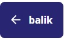
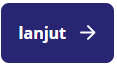

1. Navigasi Menu Samping (Sidebar)
Menu di sebelah kiri berfungsi sebagai daftar isi utama untuk mengakses seluruh materi dan fitur aplikasi:
Ikon Tutup (✕): Klik tanda silang di pojok kiri atas menu untuk menyembunyikan/menutup panel samping agar tampilan materi menjadi penuh (full screen).
2. Tombol Navigasi Halaman (Pojok Kanan Atas)
Gunakan tombol navigasi di bagian atas untuk berpindah halaman secara berurutan tanpa harus membuka menu samping:

: Klik tombol biru ini untuk kembali ke halaman/materi sebelum yang sedang dibuka.
: Klik tombol biru ini untuk melanjutkan ke halaman/materi berikutnya setelah Anda selesai membaca.3. Interaksi Konten (Area Utama)
Tombol Lipat/Buka Konten (^ / v): Di dalam kotak materi (seperti pada bagian Pengertian), terdapat tombol bulat kuning berikon panah di pojok kanan atas kotak. Klik tombol ini untuk menyembunyikan (collapse) atau menampilkan (expand) isi teks materi tersebut.
4. Alur Belajar yang Disarankan
Langkah 1: Buka menu CP-TP untuk memahami target pembelajaran.
Langkah 2: Masuk ke menu Mengenal Bioteknologi dan pelajari sub-materi secara berurutan dari atas ke bawah.
Langkah 3: Gunakan tombol lanjut → di bagian atas untuk berpindah materi secara mulus.
Langkah 4: Buka menu Asesmen di akhir pembelajaran untuk menguji pemahaman Anda terhadap seluruh materi.